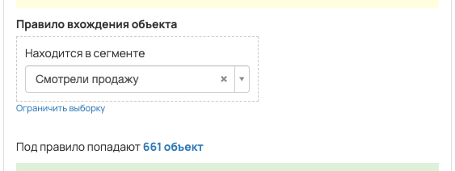
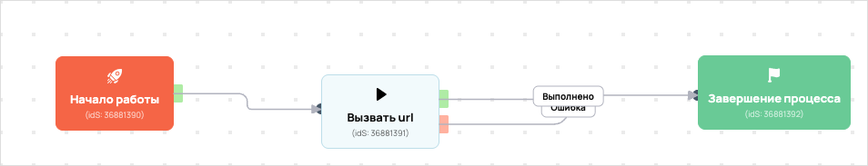

удалить (копия)
- ID процесса:
2128517 - Объект: Пользователи
- Статус: Завершен
- Внутренняя страница: 2128517. удалить (копия)
- GetCourse: Карточка | Схема процесса
Скриншоты процесса


Коротко для заказчика
- Главное: В процесс попадают пользователи из выбранных сегментов GetCourse: 33808614.
- Дальше он передает данные как: Пользователи и визиты.
- Связанных баз Vakas: 1.
Понятное описание процесса
- Процесс работает с объектом GetCourse: Пользователи. Текущий статус процесса: Завершен.
- На вход попадают данные так: В процесс попадают пользователи из выбранных сегментов GetCourse: 33808614.
- Техническое правило входа в GetCourse: Находится в сегменте.
- Дополнительные условия внутри схемы не извлечены: процесс идет напрямую по основной ветке или условия не подписаны.
- Дальше процесс делает прямые вызовы Vakas: 1. Напрямую задействованы базы: 81411.
- Передача: 81411. удалить (копия): Пользователи и визиты. Передаются параметры:
name,email,phone,getcourse_user_id. - Что происходит в amoCRM: На входе в этап ОТДЕЛ - ДОВЕДЕНИЯ -> Досмотрели до окна продаж [75910070] база ищет дубль и при необходимости переводит найденную сделку в рабочий этап.
Ход процесса в GetCourse
- Схема состоит из 3 блоков и 3 переходов.
- По типам: стартов 1, условий/ожиданий 0, вызовов URL 1, изменений полей 0, финалов 1.
Блоки процесса: что делают и зачем нужны:
- Блок
36881390«Начало работы» (старт). Что делает: Запускает выполнение схемы для объекта, который попал под правило входа процесса. Зачем нужен: Нужен как точка входа: от него GetCourse начинает движение объекта по схеме. Дальше: если результат «Выполнено», идет в «Вызвать url». - Блок
36881391«Вызвать url» (вызов URL). Что делает: Передает в Vakas: 81411. удалить (копия), канал «Пользователи и визиты» (GET); параметры:name,email,phone,getcourse_user_id; timeout 10 сек. Зачем нужен: Нужен, чтобы передать подходящий объект в 81411. удалить (копия); дальше На входе в этап ОТДЕЛ - ДОВЕДЕНИЯ -> Досмотрели до окна продаж [75910070] база ищет дубль и при необходимости переводит найденную сделку в рабочий этап. Дальше: если результат «Ошибка», идет в «Завершение процесса»; если результат «Выполнено», идет в «Завершение процесса». - Блок
36881392«Завершение процесса» (завершение). Что делает: Завершает ветку процесса после выполненных проверок и действий. Зачем нужен: Нужен, чтобы закрыть текущую ветку и не гонять объект по процессу повторно. Дальше переходов нет: это конечная точка ветки.
Что именно входит в процесс
- В процесс попадают пользователи из выбранных сегментов GetCourse: 33808614.
Как именно настроено правило
- Техническое правило входа в GetCourse: Находится в сегменте.
Куда и как передается дальше
| База Vakas | Что передается | Этап в amoCRM | Что происходит со сделкой |
|---|---|---|---|
| 81411. удалить (копия) | Пользователи и визиты | ОТДЕЛ - ДОВЕДЕНИЯ -> Досмотрели до окна продаж [75910070] | На входе в этап ОТДЕЛ - ДОВЕДЕНИЯ -> Досмотрели до окна продаж [75910070] база ищет дубль и при необходимости переводит найденную сделку в рабочий этап. |